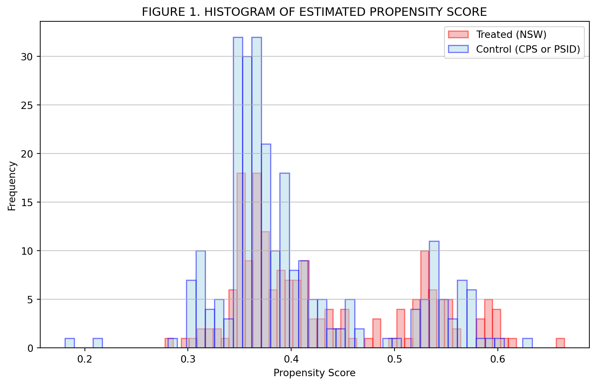
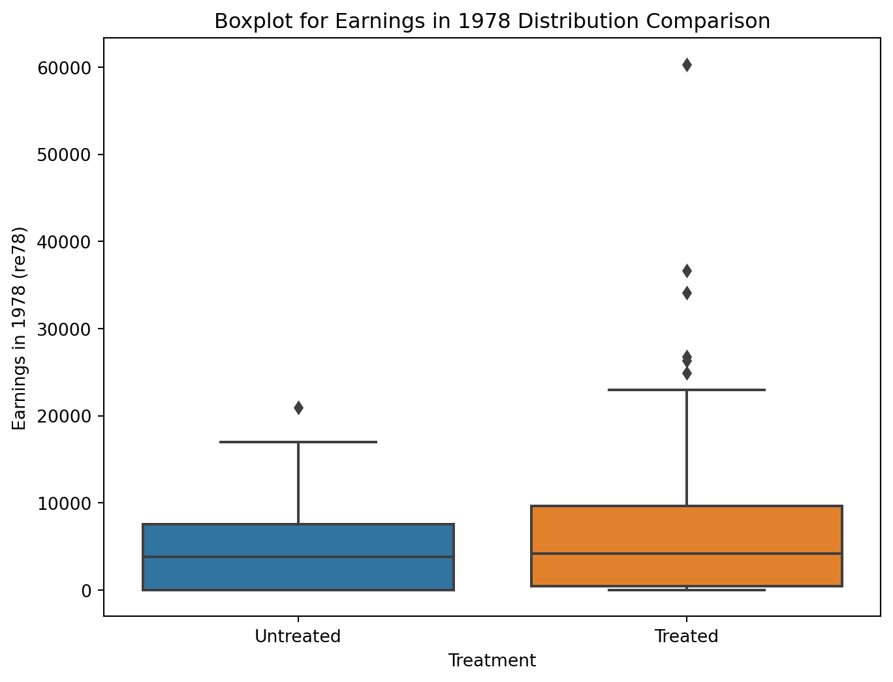
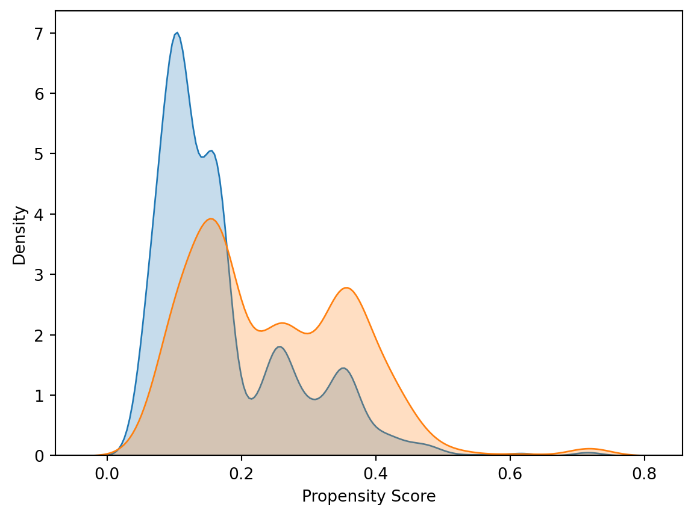
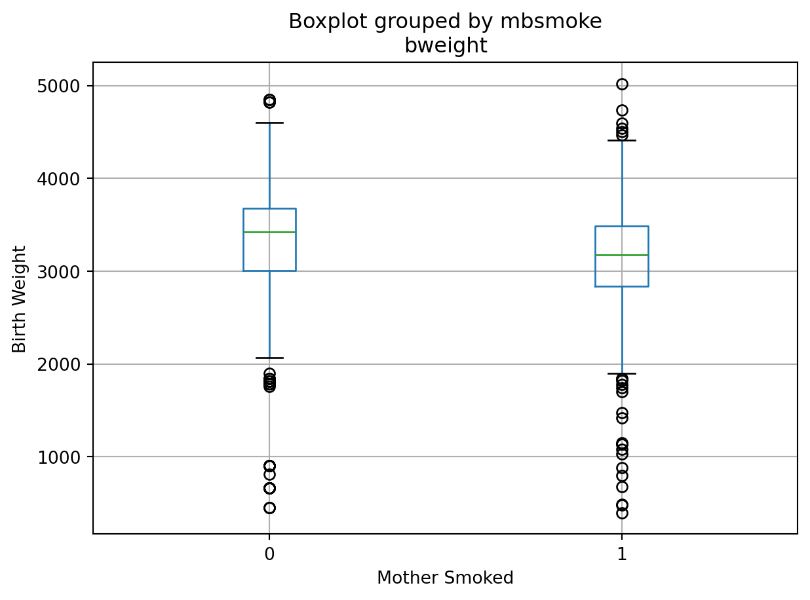

In observational studies, where treatment assignment is not random, estimating causal effects can be challenging due to potential confounding factors. One method to address this challenge is Propensity Score Matching (PSM). PSM aims to control for observed confounding by matching treated units with untreated units that have similar propensity scores. The propensity score for a unit is the probability of receiving the treatment given observed covariates. By matching on propensity scores, we aim to create a scenario where the distribution of observed covariates is similar between the treated and untreated groups, mimicking a randomized experiment. This method allows to estimate causal treatment effects in observational settings, making it a valuable tool in microeconometrics.
You have data from an observational study on a job training program. The dataset contains information on individuals’ participation in the program (treat), their earnings in 1978 (re78), and several other covariates such as age, education, race, marital status, and earnings in 1974 and 1975. The main objective of this exercise is to estimate the Average Treatment Effect on the Treated (ATT) of the job training program on earnings in 1978 using Propensity Score Matching.
import pandas as pdimport numpy as npimport matplotlib.pyplot as pltfrom sklearn.linear_model import LogisticRegressionfrom sklearn.neighbors import NearestNeighbors# Load the datasetdata = pd.read_stata('Datasets/Dehejia_Wahba_1999.dta')# Define the covariates and the treatment variableX = data[['age', 'education', 'black', 'hispanic', 'married', 'nodegree', 're74', 're75']]y = data['treat']# Estimate propensity scores using logistic regressionlogit = LogisticRegression(max_iter=1000)logit.fit(X, y)data['propensity_score'] = logit.predict_proba(X)[:, 1]# Perform matchingtreated = data[data.treat ==1]untreated = data[data.treat ==0]neigh = NearestNeighbors(n_neighbors=1)neigh.fit(untreated[['propensity_score']])indices = neigh.kneighbors(treated[['propensity_score']], return_distance=False)matched = untreated.iloc[indices.flatten()]# Reset indexes for treated and matched DataFramestreated = treated.reset_index(drop=True)matched = matched.reset_index(drop=True)# Diagnostic Checks# 1. Check for Missing Valuesprint(data[['age', 'education', 'black', 'hispanic', 'married', 'nodegree', 're74', 're75', 're78']].isnull().sum())# 2. Check Matching Resultsprint("Number of treated individuals:", len(treated))print("Number of matched untreated individuals:", len(matched))# 3. Check Propensity Scoresprint("Unique propensity scores:", data['propensity_score'].nunique())# Calculate ATTATT = (treated['re78'] - matched['re78']).mean()print(f"Average Treatment Effect on the Treated (ATT): {ATT}")# Plot the histograms with outlined bars and a chosen fill colorplt.figure(figsize=(10, 6))plt.hist(treated['propensity_score'], bins=50, alpha=0.5, color ="lightcoral", ec="red", linewidth=1.2, label='Treated (NSW)')plt.hist(untreated['propensity_score'], bins=50, alpha=0.5, color ="lightblue", ec="blue", linewidth=1.2, label='Control (CPS or PSID)')plt.legend(loc='best')plt.title('FIGURE 1. HISTOGRAM OF ESTIMATED PROPENSITY SCORE')plt.xlabel('Propensity Score')plt.ylabel('Frequency')plt.grid(axis='y', alpha=0.75)plt.show()import seaborn as sns# Boxplot for earnings in 1978 (re78) distribution comparisonplt.figure(figsize=(8, 6))sns.boxplot(x='treat', y='re78', data=pd.concat([treated, matched]))plt.xlabel('Treatment')plt.ylabel('Earnings in 1978 (re78)')plt.title('Boxplot for Earnings in 1978 Distribution Comparison')plt.xticks([0, 1], ['Untreated', 'Treated'])plt.show()
age 0
education 0
black 0
hispanic 0
married 0
nodegree 0
re74 0
re75 0
re78 0
dtype: int64
Number of treated individuals: 185
Number of matched untreated individuals: 185
Unique propensity scores: 336
Average Treatment Effect on the Treated (ATT): 1454.528076171875

C:\Users\Usuario\AppData\Local\Programs\Python\Python311\Lib\site-packages\seaborn\_oldcore.py:1498: FutureWarning: is_categorical_dtype is deprecated and will be removed in a future version. Use isinstance(dtype, CategoricalDtype) instead
if pd.api.types.is_categorical_dtype(vector):
C:\Users\Usuario\AppData\Local\Programs\Python\Python311\Lib\site-packages\seaborn\_oldcore.py:1498: FutureWarning: is_categorical_dtype is deprecated and will be removed in a future version. Use isinstance(dtype, CategoricalDtype) instead
if pd.api.types.is_categorical_dtype(vector):
C:\Users\Usuario\AppData\Local\Programs\Python\Python311\Lib\site-packages\seaborn\_oldcore.py:1498: FutureWarning: is_categorical_dtype is deprecated and will be removed in a future version. Use isinstance(dtype, CategoricalDtype) instead
if pd.api.types.is_categorical_dtype(vector):

Block 3.2 - ALGO COMO OVERLAP CHECK O COMPARAR CON REGRESIÓN [DC Defines]
Estimating the Causal Impact of Lottery Wins
In observational studies, Propensity Score Matching (PSM) offers a way to estimate the effect of a treatment, policy, or other intervention when randomized controlled trials are not possible. PSM attempts to mimic randomization by creating a sample of units that received the treatment that is comparable on all observed covariates to a sample of units that did not receive the treatment. The study by Imbens, Rubin, and Sacerdote utilizes PSM to analyze the impact of winning substantial lottery prizes on economic behavior. The authors exploit the randomness in lottery wins to assess how additional income affects labor earnings.
You will analyze a dataset that mirrors the one used in the study, focusing on 496 lottery participants, some of whom won large prizes while others did not.
import pandas as pdfrom sklearn.linear_model import LogisticRegressionCVfrom sklearn.neighbors import NearestNeighborsimport numpy as np# Load the datasetdata = pd.read_stata('Datasets/LotteryDataSet.dta')# Define the treatment: any non-zero prize value indicates a winnerdata['treatment'] = (data['prize'] >0).astype(int)# Define covariatescovariates = ['tixbot', 'yearw', 'workthen', 'yearm1']X = data[covariates]y = data['treatment']# Assuming that winners have a 'prize' value over a certain threshold, # which you mentioned is on average $50,000 per year for twenty years.# You'll need to define this threshold based on your data and the specifics of your study.big_prize_threshold =50000*20data['treatment'] = (data['prize'] >= big_prize_threshold).astype(int)# Check again after redefining the treatmentprint(data['treatment'].value_counts())# Fit the logistic regression model with cross-validation and L2 regularization"""logit_cv_model = LogisticRegressionCV(cv=5, penalty='l2', scoring='neg_log_loss', solver='liblinear')logit_cv_model.fit(X, y)# Retrieve the propensity scoresdata['propensity_score'] = logit_cv_model.predict_proba(X)[:, 1]# Matching treatment and control using Nearest Neighborsnn_model = NearestNeighbors(n_neighbors=1, algorithm='ball_tree').fit(data.loc[data['treatment'] == 0, ['propensity_score']])distances, indices = nn_model.kneighbors(data.loc[data['treatment'] == 1, ['propensity_score']])matched_controls = indices.flatten()treatment_outcomes = data.loc[data['treatment'] == 1, 'yearm1'].to_numpy()control_outcomes = data.loc[data['treatment'] == 0, 'yearm1'].to_numpy()[matched_controls]# Calculate the Average Treatment Effect on the Treated (ATT)ATT = np.mean(treatment_outcomes - control_outcomes)print(f'The estimated ATT is: {ATT}')"""
treatment
0 237
Name: count, dtype: int64
"\nlogit_cv_model = LogisticRegressionCV(cv=5, penalty='l2', scoring='neg_log_loss', solver='liblinear')\nlogit_cv_model.fit(X, y)\n\n# Retrieve the propensity scores\ndata['propensity_score'] = logit_cv_model.predict_proba(X)[:, 1]\n\n# Matching treatment and control using Nearest Neighbors\nnn_model = NearestNeighbors(n_neighbors=1, algorithm='ball_tree').fit(data.loc[data['treatment'] == 0, ['propensity_score']])\ndistances, indices = nn_model.kneighbors(data.loc[data['treatment'] == 1, ['propensity_score']])\nmatched_controls = indices.flatten()\ntreatment_outcomes = data.loc[data['treatment'] == 1, 'yearm1'].to_numpy()\ncontrol_outcomes = data.loc[data['treatment'] == 0, 'yearm1'].to_numpy()[matched_controls]\n\n# Calculate the Average Treatment Effect on the Treated (ATT)\nATT = np.mean(treatment_outcomes - control_outcomes)\nprint(f'The estimated ATT is: {ATT}')\n"
Assessing the Impact of Maternal Smoking on Birth Weight
Maternal smoking during pregnancy has been a subject of extensive study due to its potential impact on infant health outcomes, such as birth weight. However, simply comparing the birth weights of infants born to smokers versus non-smokers may not account for confounding factors that influence both the likelihood of smoking and birth outcomes.
import pandas as pdimport statsmodels.formula.api as smffrom sklearn.linear_model import LogisticRegressionfrom sklearn.neighbors import NearestNeighborsimport matplotlib.pyplot as pltimport seaborn as sns
# Leer el conjunto de datosbirth_weight = pd.read_csv("Datasets/Birth_Weight.csv")# Recodificar variablesbirth_weight['mmarried'] = birth_weight['mmarried'].apply(lambda x: 1if x =="Married"else0)birth_weight['fbaby'] = birth_weight['fbaby'].apply(lambda x: 1if x =="Yes"else0)birth_weight['mbsmoke'] = birth_weight['mbsmoke'].apply(lambda x: 1if x =="Smoker"else0)# Regresión OLSols_model = smf.ols('bweight ~ mbsmoke + mmarried + mage + medu + fbaby', data=birth_weight).fit()print(ols_model.summary())# Estimar puntuaciones de propensión usando regresión logísticaX = birth_weight[['mmarried', 'mage', 'medu', 'fbaby']]y = birth_weight['mbsmoke']logit = LogisticRegression()logit.fit(X, y)birth_weight['pscore'] = logit.predict_proba(X)[:, 1]# Diagnóstico de solapamiento en las puntuaciones de propensiónsns.kdeplot(birth_weight[birth_weight['mbsmoke'] ==0]['pscore'], shade=True, label='No Smoker')sns.kdeplot(birth_weight[birth_weight['mbsmoke'] ==1]['pscore'], shade=True, label='Smoker')plt.xlabel('Propensity Score')plt.ylabel('Density')plt.show()# Realizar emparejamiento del vecino más cercanosmokers = birth_weight[birth_weight['mbsmoke'] ==1]non_smokers = birth_weight[birth_weight['mbsmoke'] ==0]nn = NearestNeighbors(n_neighbors=1)nn.fit(non_smokers[['pscore']])matches = nn.kneighbors(smokers[['pscore']], return_distance=False)matched_smokers = smokersmatched_non_smokers = non_smokers.iloc[matches[:, 0]]# Comparar grupos emparejadosmatched_data = pd.concat([matched_smokers, matched_non_smokers])matched_data.boxplot(column='bweight', by='mbsmoke')plt.xlabel('Mother Smoked')plt.ylabel('Birth Weight')plt.show()
C:\Users\Usuario\AppData\Local\Temp\ipykernel_11340\896871543.py:21: FutureWarning:
`shade` is now deprecated in favor of `fill`; setting `fill=True`.
This will become an error in seaborn v0.14.0; please update your code.
sns.kdeplot(birth_weight[birth_weight['mbsmoke'] == 0]['pscore'], shade=True, label='No Smoker')
C:\Users\Usuario\AppData\Local\Programs\Python\Python311\Lib\site-packages\seaborn\_oldcore.py:1498: FutureWarning: is_categorical_dtype is deprecated and will be removed in a future version. Use isinstance(dtype, CategoricalDtype) instead
if pd.api.types.is_categorical_dtype(vector):
C:\Users\Usuario\AppData\Local\Programs\Python\Python311\Lib\site-packages\seaborn\_oldcore.py:1119: FutureWarning: use_inf_as_na option is deprecated and will be removed in a future version. Convert inf values to NaN before operating instead.
with pd.option_context('mode.use_inf_as_na', True):
C:\Users\Usuario\AppData\Local\Temp\ipykernel_11340\896871543.py:22: FutureWarning:
`shade` is now deprecated in favor of `fill`; setting `fill=True`.
This will become an error in seaborn v0.14.0; please update your code.
sns.kdeplot(birth_weight[birth_weight['mbsmoke'] == 1]['pscore'], shade=True, label='Smoker')
C:\Users\Usuario\AppData\Local\Programs\Python\Python311\Lib\site-packages\seaborn\_oldcore.py:1498: FutureWarning: is_categorical_dtype is deprecated and will be removed in a future version. Use isinstance(dtype, CategoricalDtype) instead
if pd.api.types.is_categorical_dtype(vector):
C:\Users\Usuario\AppData\Local\Programs\Python\Python311\Lib\site-packages\seaborn\_oldcore.py:1119: FutureWarning: use_inf_as_na option is deprecated and will be removed in a future version. Convert inf values to NaN before operating instead.
with pd.option_context('mode.use_inf_as_na', True):


Block 3.3 - Inverse Propensity Score Weighting
Dehejia, Rajeev H., and Sadek Wahba. 2002. “Propensity Score-Matching Methods For Nonexperimental Causal Studies.”The Review of Economics and Statistics 84 (1): 151–61.